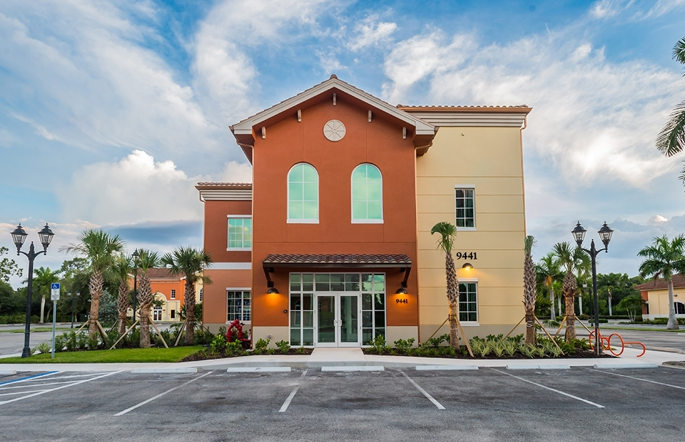
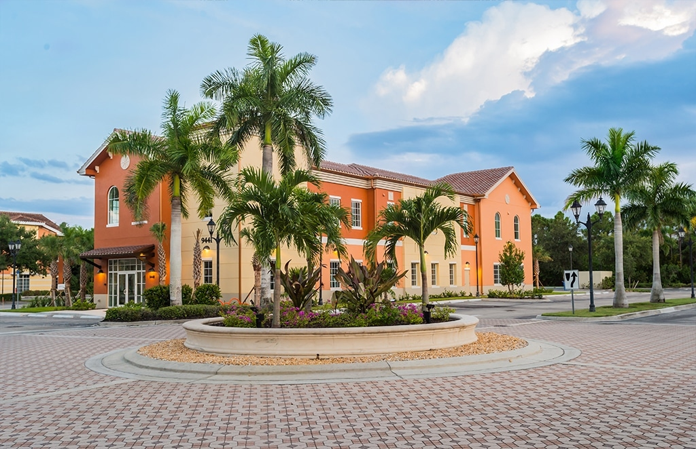

Healthcare / Medical Office

Ginsberg Eye Center is a high-end ophthalmology practice in Estero, FL - a two-story medical office building at 9441 Ben C Pratt Pkwy set within a Mediterranean-style professional campus with paver drives, royal palm landscaping, and a grand roundabout entry.
Healthcare projects have specific glazing requirements - the right balance of natural light without solar gain, clear sightlines for wayfinding, and the clean, professional aesthetic that patients expect from a high-end medical practice. ACG delivered the complete ESWindows package to hit all three.
ACG supplied and installed the ESWindows commercial storefront and window package throughout the building: the main entry storefront with the white aluminum frames that define the ground-floor entry, the arched specialty windows in the entry tower that give the building its distinctive look, and the commercial window units across both floors of the main building wings.
Those arched windows at the top of the terracotta entry tower are the detail that makes this building. They required custom ESWindows fabrication to hit the radius and match the architectural intent - installed plumb, sealed correctly, and looking exactly like the drawings called for.


Healthcare, medical office, institutional - ACG delivers the glazing package with the precision healthcare construction demands. Send your plans and get a scope in 48 hours.
Send Us Plans